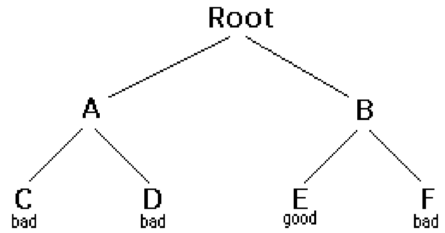

The usual scenario is thar you are faced with a number of options, and you
must choose one of these .Aftre you make your choice you will get a new
set of options;just what set of option you get depends on what choice you
made. This procedure is repeated over and over until you reach a final
state. If you made a good sequence of choice, you final state is a goal
state; if you didn't,it isn't.
Conceptually,you start at the root of a tree; the tree probably has good
some good leaves and some bad leaves,though it may be that the leaves are
all good or all bad. You want to get to a leaf . At each node, begining
with the root, you choose one of its children to move to, and you keep
this up until you get to a leaf.
Suppose you get to a bad leaf. You can backtrack to continue the search
for a good leaf by revoking your most recent choice , and trying out the
next option in that set set of option, revoke the choice that got you
here, and try another choice at that node. If you end up at the root with
no options left, there are no good leaves to be found.
This needs an example.

Starting at Root, your options are Aand B. You choose A.
At A, your options are C and D. You choose C.
C is bad . Go back to A.
At A, you have already tried C, and it failed. Try D.
D is bad. Go back to A.
At A, you have no options left to try. Go back to Root.
At Root, you have already tried A.Try B.
At B, your options are Eand F. Try E.
E is good. Congratulations!
The backtracking algorithm.
boolean solve(Node n){
if n is a leaf node{
if the leaf is a goal node, return true
else return false
} else{
for each child c of n{
if solve (c) succeeds, return true } return false
}
}
Notic that tha algorithm is expressed as a boolen function. This is
essential to understanding the algorithm .if solve (n) is true ,that means
node n is part of a solution-that is, Node n is one of the nodes on patth
from the root to some goal node. We say that n is solvable .If solve(n) is
false, then there is no path that includes n to any goal node.
How does this work?
If any child of n is solvable,then n is solvable.
If no child of n is solveble, then n is not solvable.
Hence, to decide whether any non-leaf node n is solveble (part of a path
to a goal node),all you have to do is test whether any child of n is
solvable. This is done recursively, on each child of n. In the above code,
this os done by the lines
for each child c of n{
if solve(c) succeeds, return true
}
return false
Eventually the recursion will "bottom" out at a leaf node. if the node is
a goal node, it is solvable; if is solvable; if the leaf node is not a
goal node, it is not solvable. This is our base case. In the above code,
this is done by the lines
if n is a leaf node{
if the leaf is a goal node, return true
else return false
}
The backtracking algorithm is simple but important. You should understand
it thoroughly. Another way of stating it is as follws:
. To search a tree:
If the tree consists of a single leaf, test whether it is a goal node.
Otherwise,search the subtrees untill you find one containing a goal
node, or untill you have searched them all unsuccessfully.
Non- recursive backtracing, using a stack
Backtracking is a rather typical recursive algorithm, and any recursive
algorithm can be rewritten as a stack algorithm . in fact, that is how
your recursive algorithum are translated into machine or assembly
language.
boolean solve (Node n){
put node n on the stack;
While the stack is not empaty{
if the node at the top of stack is a leaf{
if it is goal node, return true
else pop it off the stack
}
else{
if the node at the top of the stack has untried children
push the next untried child onto the stack
else pop the node off the stack
}
return false
}
Stating from the root, the only nodes that can be pushed onto the stack
are the children of the Node currently on the top of the stack, and these
are the only pushed on one child at a time;the nodes on the stack at all
times descibe a valid path in the tree. Nodes are removed from the stack
only when it is know that they have no goal nodes among their descendents.
Therefore, if the root node gets removed (making the stack empty),there
must have been no goal nodes at all, and no solution to the problem.
When the stack algorithum terminates successfully, the nodes on the stack
form (in reverse order)a path from the root to a goal node.
Similarly, when the recursive algorithum finds a goal node, the path
information is embodied (in reverse order) in the sequence of recurisive
calls. Thus asathe recursion unwinds, the path can be recovered one node
at a time, by (for instance) printing the node at the cirrent level,or
storing it in an array.
Here is the recursive backtraking algorithum, modified slightly to print
(in reverse order )the nodes along the successful path:
boolen solve (Node n){
if n is a leaf node{
if the leaf is a goal node{
print n
return true
}
else return false
}else{
for each child c of n{
if solve (c) succeeds{
print n
return true
}
}
return false
}
}
Keeping backtracing simple
All of these verison of the backtracing algorithum are pretty simple, but
when applied to a real problem, they can get pretty cluttered up with
details. Even determining whether the node is a leaf can be complex:
for example, if the path represents a series of moves in a chess endgame
problem, the leaves are the checkmate and stalemate solution
To keep the program clean, therefore, tests like this should br buried in
methods. in a chess game, for example, you could test whether a node is a
leaf by writing a gameOver method(or you could even call
it isLeaf
).This method would encapsulate all the ugly details of figuring out
whether any possible moves remain.
Notic that the backtracing altorithms require us to keep track, for each
node on the current path, which of children have been tried already (so we
don't have to try them again). in the above code we made this look simple,
by just saying
for each child c of n. in reality, it may be difficult to
figure out what the possible children are, and there may be nio abvious
way to step thorough them. in chess, for example, a node can represent one
arrangement of pieces on a chessboard, and each child of that node
represent the arrangement after some pieces has made a legal move. How do
you find these children, and how do you keep track of which ones you've
already examined?
The most straightforward way to keep track of which children of the node
have been tried is as follows:Upon intial entry to the node(that is, when
you first get there from above), make a list of all its children. As you
try each child , take it off the list.When the list is empty, there are no
remaining untried children, and you can return"failur."This is a simple
approach, but it may require quite a lot of additional work.
There is an easier way to keep track of which children have been tried, if
you can define an ordering on the children. if there is an ordering, and
you know which child you just tried, you can determine which child to try
next.
For example, you might be able to number the
children 1 through n, and try them in numberical order.
Then , if you have just tried child k, you know that you
have already tried children 1 througkk-1,and you have not
yet tried children k+1throughn Or, if
you are trying to color a map with just four colors, you can always try
red first, then green, then blue. if child yellow fails,
you know to try child green next. if you are searching a maze, you can try
choices in the order left, straight, right
(or perhaps north, east, south,west).
It isn't always easy to find a simple way to order the children of a
node.In the chess game example,
you might number your pieces (or perhaps the squares of the board) and try
them in numerical order;but in addition each piece may also have several
moves, and these must also be ordered.
Example: Tree Search
For starters, let's do the simplest possible example example of
backtracing, which is searching an actual tree. we will also use the
simplest kind of tree, a binary tree.
A binary tree is a data structure composed of nodes. One node is
designated as athe node. Each node can reference (point to) zero, one, or
two other nodes,which are called its children. The children are referred
to as the left child and/or the right child. All nodes are reachable (by
one or more steps) from the root node, and there are no cycles. For our
purposes, although this is not part of the definition of a binary tree, we
will say that a node might or might not be a goal node,and will contain
its name . The first example in this paper (which we repeat here)shows a
binary tree.
Here's a definition of the Binary Tree class:
public class Binary Tree{
Binary Tree leftChild = null;
Binary Tree rightChild = null;
boolen isGoalNode = false;
string name;
BinaryTree(String name,BinaryTree left,BinaryTree right,boolen isGoalNode){
this.name=name;
leftChild=left;
rightChild=right;
this.isGoalNode = isGoalNode;
}
}
Here's a main program to create a binary tree and try to solve it:
public static void main(Sting args[]){
BinaryTree tree = makeTree();
System.out.println(solvable(tree));
}
And finally, here's the recursive backtracking routine to"solve" the
binary tree by finding a goal node.
ststic boolen solveable(BinaryTree node){
/*1*/ if (node==null)return false;
/*2*/ if (node.isGoalNode)return true;
/*3*/ if (solveable(node.leftChild))return true;
/*4*/ if (solveable(node.rightChild))return true;
/*5*/ if return false;
}
Here's what the numbered lines are doing:
If we are given a null node, it's not solvable. This statement is so
that we can call this method with the children of a node, without first
chechking whether those children actually exist.
if the node we are given is a goal node, return success.
See if the left child of nodes is solvable, and if so, conclude that
node is soilvable. We will only get to this line if node is non-null and
is not a goal node, says to
Do the same thing for the right child.
Since neither child of node is solvable, node itself is not solvable.
This program runs correctly and produces the unenlightening result true.
Each time we ask for another node, we have to check if it is null.in the
above we put that check as the first thing in solvable. An alternative
would be to check first whether each child exist, and recur only if they
do. Here's that alternative version:
I think the first version is simpler, but the second version is slightly
more efficient.
What are the children?
One of the things that simplifies the above binary tree search is that, at
each choice point, you can ignore all the previous choices. Previous
choices don't give you any information about what you should do next;as
far as you know , both the left and the right child are possible
solutions. in many problems, however, you be able to eliminate children
immediately, without recurision.
One of the things that sikplifies the above binary tree search is that, at
each choice point, you can ignore all the previous choices. previous
choices don't give you any information about what you should do next, as
you know, both the left and the right child are possible solutions. in
many problems, however, you may be able to eliminate children
immmediately, without recursion
Consider , for exaple, the problem of four-coloring map. it is a theorem
of mathematics that any map on a plane,no matter how convoluted the
countries are, can be colored with at most four color, so that no two
cuntries that share a border are the same color.
To color a map , you choose a color for the first country, then a color
for the second country, and so on, until all countries are colored.
There are two ways to do this:
Method 1. Try each of the four possible colors, and recur. When you run
out of countries, check whether you are at a goal node.
Method 2.Try only those colors that have not already been used for an
adjacent country, and recur. if and when you run out of countries, you
have successfully colored the map.
Let's apply each of these two methods to the problem of coloring a
checherboard. This should be easily solvable; after all, a checkerboard
only needs two colors.
boolean maplsOk()
Used by method 1 to check (at a leaf node) whether the entire map is
colored correctly.
boolean okToColor(int row,int column,int color)
Used by method2 to check, at every node, whether there is an adjacent node
already colored with the given color.
int[] nextRowAndColumn(int row, int column)
Used by both methods to find the next"country" (actually , the row and
column of the next square on the checkerboard).
Here's the code for method 1:
boolean explore1(int row, int column, int color){
if(row >=NUM-ROWS)return maplsOk();
map[row][column]=color;
for (int nextColor=RED;nextColor <=BLUE;nextColor++){
int[]next=nextRowAndColumn(row,column);
if(explore1(next[0],next[1],nextColor))return true;
}
return false;
}
And here's the code for method2:
boolean explore2(int row, int column, int color){
if(row >=NUM-ROWS)return true;
if (okToColor(row,column,color)){
map[row][colummn,color]=color;
for (int nextColor=RED;nextColor <=BLUE;nextColor++){
int[]next=nextRowAndColumn(row,column);
if(explore2(next[0],next[1],nextColor))return true;
}
}
return false;
}
Those appear pretty similar, and you might think they are equally good.
However, the timing information suggests otherwise:
2 by 3 map
3 by 3 map
3 by 4 map
Method 1:
60 ms.
940 ms.
60530 ms.( 1 minute)
Method 2:
0ms.
0 ms.
0 ms
The zeros in the above table indicate times too short to measure (less
than 1 millisecond). Why this huge difference? Either of these methods
could have exponential growth. Eliminating a node automatically eliminates
all of its descendents, and this will often prevent exponential growth.
Conversely, by waiting to check untill a leaf node is reached, exponential
growth is practically guaranteed. if there is any way to eliminate
children (reduce the set of choices), do so!
Debugging techniques
Often our first try at a program doesnt's work , and we need to debug it. Debuggers are helpful, but sometimes
we need to fall back on inserting print statements. There are some simple tricks to making effictive use of prrint statments.
These tricks can be applied to any program, but are especially useful when you are trying to debug recursive routines.
Trick #1: Indent when you print method entries and exits.
Often, the best debugging technique is to print every method call and return(or at least the most important
ones.)you probably want to print, for each method, what parameters it came in with, and what value it leaves with . However,
if you just print a long list of these, it's hard to match up method exist with their corresponding entries. indenting to show level of nesting can help.
Trick #2: Use specialized print methods for debugging.
Don't clutter up your actual code more than you must. Also, remember that code insreed for debugging purposes
can itself contain bugs, or (in the worst case)can affect the results, so be very careful with it.
Here's our debugging code. For this trivial program, there's almost more debugging code than actual code, but in larger
programs the proportions will be better.
Trick #3: Never discard your debugging statements.
Writing debugging statement is programming, too. often it's as much work to debug the debugging statements as it is
to debug the actual program. Once your program is working, why throw this code away?
Obviously, you don't want to print out all this debugging information from a program you are ready to submit (or to
turn over to your manager). You could comment out your debugging calls, but that can be a lot of work. What's more, in the above example, you would have to replace every return(yes(node))
with return(true), and every return(no(node)) with return false. With all these changes, you might introduce new bugs into your program.
THhe simple solution is to make your debugging statments conditional.For example,
In industry, actual programs often have multiple flags to control different aspects of debugging. Don't worry too much about
making your code larger;modern compilers will notice that since the variable debugging is final, it can never betrue, and the controlled code will be discarded.
Trick #4: Create an Exception.
If an Exception is thrown, you can get information about just where it happended by sending it the message printStarckTrace
(printStream). Since an Exception is an object like any other, you can create and throw your own Exceptions.
However,Java programmers don't always realize that you can create an Exception without throwing it. For example, thr
following code
new Exception("Checkpoint Charlie").printStackTrace(System.out);
will print out a message something like this, and the program will then continue normally. That is, the above code just acts like a print statment.
java.lang.Exception:Checkpoint Charlie
at TreeSearch.solvable(TreeSeach.java:53)
at TreeSearch.solvable(TreeSeach.java:57)
at TreeSearch.main(TreeSeach.java:72)
at_SHELL38.run(_SHELL38.java:16)
at bluej.runtime.ExecServer.suspendExecution(Unknown Source)
I call the follwing puzzle "Cindy's puzzle" for historical reason. You have some number n of black marbles and the same number of white marbales,
and you have a playing board which consists simple of line of 2n+1 spaces to put the marbles in .Start with
the black marbles all at one end (say, the left), the white marbales all at the other end, and a free space in between.
The goal is to reverse the proportions of the marbles:
The black marbles can only move to right, and the white marbales can only move to left
(no backing up.) At each move, marble can either:
Move one space ahead, if that space is clear,or
Jump ahead over exactly one marble of the opposit color, if the space just beyond that marbal is clear.
For exaple, you could make the follwing sequence of moves:
Starting position:
Black moves ahead:
White jumps:
Black
moves ahead:
Black
jumps:
White moves ahead:
Stuck!
The backtracing method is named solvable and returs a boolean. In solvable we shall need to check whether we are at a leaf,
which in this case means a position from which no further moves are possible. This isn't so easy.
Now to the program. The main program will intialize the board, and call a recursive backtracking routine to attempt to solve the
puzzle. The backtracing routine will either succeed and print out a winning path, or it will fail, and the main program will have to print out the bad news.
The backtracing method is named soilvable and return a boolean. In solveable we shall need to check whether we are at a leaf,
which in this case means a position from which no further moves are possible. This isn't so easy.
Each possible move will result in a new board position, and these new board position are the children of the current board position. Hence to find the children of a node(that is, of a board position)
we need only find the possible moves from that node.Remember that it is also highly desirable to find an ordering on these possible moves.
Here it is to stop and take thought. To make progress, we must analyze the game to some extent. Probably a number of approaches would work, and what follows is based on the way I worked it out. If you were to program this puzzle, you might find a different but equaiiy valid approach.
First, notice that if a marble has a move, that move is unique:if it can move ahead one square, then it cannot jump. If it can jump, it cannot move ahead one square
. This suggests that, to find the possible moves, we might assign numbers to the marbles, and check each marble in turn. When we have looked at all the marbles, we have looked at all the possible moves. This would requir
having a table to keep track of where each marble is,or else somehow "marking" each marble with its number and searching the board each time to find the marble we want. Neither alternative is very attractive.
Next, notice that for a given board position, each marble occupies a uniquespace. Hence, instead of talking about moving
a particular marble, we can talk about moving the particular space. If a move is possible from a given space, then that must be the only move possible from that space, because if that space has a move, it is unique. There is a slightly
complication because not every space contains a marble, but at least the spaces(unlike the marbles)
stay in one place.
Now we have a simpler ordering of moves to use in our program. Just check, in order, the 2n+1 spaces of the board. For each space, either zero or one moves is possible. With this understanding, we can write a boolean
method canMove(int[]board,int position) which determines whether a move is possible from the given position:
the position is empty,no move is possible;
If the position contains a black marble, the method checks for a move or jump to the right;
If the position contains a white marble, the method checks for a move or jump to the left.
We write another method int[] makeMove(int[] oldBoard,int position) that will take a board and a position, make a move from that position, and return as its value a new board.
(We could write this somewhat more efficiently by changing the old board, rather than creating a new one, but here we are more concerned with simplicity.) In technical jargon, makeMove is "applicative"
rather than "mutative."
Along with canMove and makeMove, we are using methods puzzleSolved and printBoard
with meaning that should be obvious.
Along with canMove and makeMove, we are using methods puzzlesSolved and printBoard with meanings that should be obvious.
Here is some output from the program:
16. WHITE WHITE _____ BLACK BLACK BLACK BLACK 15. WHITE WHITE WHITE BLACK _____ BLACK BLACK 14. WHITE WHITE _____ BLACK WHITE BLACK BLACK 13. WHITE _____ WHITE BLACK WHITE BLACK BLACK 12. WHITE BLACK WHITE _____ WHITE BLACK BLACK 11. WHITE BLACK WHITE BLACK WHITE _____ BLACK 9. WHITE BLACK WHITE BLACK _____ BLACK WHITE 8. WHITE BLACK _____ BLACK WHITE BLACK WHITE 7. _____ BLACK WHITE BLACK WHITE BLACK WHITE 6. BLACK _____ WHITE BLACK WHITE BLACK WHITE 5. BLACK BLACK WHITE _____ WHITE BLACK WHITE 4. BLACK BLACK WHITE BLACK WHITE _____ WHITE 3. BLACK BLACK WHITE BLACK _____ WHITE WHITE 2. BLACK BLACK _____BLACK WHITE WHITE WHITE 1. BLACK BLACK BLACK _____ WHITE WHITE WHITE
Notice that the solution is given in reverse order:BLACK start out on the left and WHITE on the right, as in the least
line. I've added line numbers to the actual output in order to emphasize this point.Backtracking always produces its
result (sequence of choices) in reverse order; it is up to you, the programmer, to reverse the results again to get them in the correct order.